Sample images from the Hard Hat worker dataset [5].
Introduction and Motivation
The construction industry is known for its high-risk environments, with workers exposed to various hazards, including falling objects, which can lead to severe head injuries or even fatalities. The critical nature of these accidents, particularly head injuries resulting from the improper use of safety helmets, underscores a pressing concern for worker safety. In 2012 alone, the construction sector witnessed over 65,000 head injuries requiring days away from work, with head injuries culminating in 1,020 fatalities, according to the 2015 edition of the National Safety Council's "Injury Facts" chartbook [6]. Moreover, out of the total of 391 people with body parts injured in the construction industry in 2016, 161 people (41.2%) were injured in the head, according to the Korea Occupational Safety and Health Agency [9].
In response to this alarming issue, this project aims to find the best automatic safety helmet detection system that will mitigate workplace accidents, by leveraging the advanced capabilities of deep learning models in object detection. Many architectures can be used to solve this object detection problem. In this research, we investigate various state-of-the-art models, including YOLOv5 [7], YOLOv8 [8], and Vision Transformers (ViT) [3], (specifically the Detection Transformer (DETR), to ascertain their applicability and effectiveness on our dataset.
Prior Work on Safety Helmet Detection
Several prior studies in safety helmet detection on construction sites have used sensor-based methods and some algorithmic-based approaches. In [1], a combination of the Zigbee and Radio Frequency Identification (RFID) technologies was used to detect personal protective equipment (PPE) in workers. In [4], the authors combined Haar-like features and Circle Hough Transform (CHT) techniques for helmet detection. Also, in [11], an automatic helmet detection method using Histograms of Oriented Gradient (HOG) features and the CHT technique was proposed.
More recent studies have focused on using deep learning techniques, particularly YOLO architectures, for safety helmet detection. In [13], different YOLO architectures were compared, with YOLOv5x providing the best precision. In [11], YOLOv3 with Gaussian blurring was used to address data imbalance issues.
However, challenges remain, especially in detecting helmets in scenes with multiple workers and when the worker is not facing the camera. These insights underscore the need for ongoing research to refine deep learning models further, ensuring their effectiveness in real-world construction site environments and ultimately enhancing worker safety through improved automated detection systems. This is why we will also apply the Vision Transformer (ViT) architecture in the dataset, which has never been applied before.
Dataset Description
The dataset we used for this project is the Hard Hat worker image dataset published by MakeML [5]. This dataset is specifically designed for the detection of hard helmets used in the construction industry. It contains 5000 images, each accompanied by bounding box annotation files. Initially, the dataset includes three classes: Helmet, Person, and Head with more than 26000 total instances.
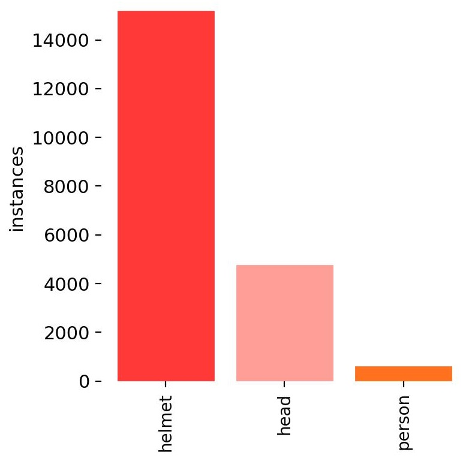
Figure 1: Histogram of the three classes in dataset.
Data Pre-processing
As we can observe from the Figure 1 above, the dataset is highly imbalanced. Most of the instances (approximately 15000) refer to the 'helmet' class while only about 5000 instances are of the 'head' class and less than 1000 instances are of the 'person' class. So, for this research, we only focus on two classes: 'Helmet' and 'Head'. The decision to focus only on these two classes is also based on the project’s primary goal of detecting whether workers are wearing their safety helmets correctly. By identifying instances of "Head" without a corresponding "Helmet," the system can alert supervisors to potential safety violations, allowing for prompt corrective action. Furthermore, in order to run the YOLO experiments, we reshaped the images into (640x640) to comply with the YOLO input size requirements. Finally, we split our data into 3 sets (training, validation, and test sets) with 3000, 1000, and 1000 images respectively.
Method
YOLO
For this project, we trained the YOLOv5 and YOLOv8 models. These are state-of-the-art object detection architectures that have gained significant popularity due to their efficiency and accuracy. These architectures share several key components that contribute to their exceptional performance:
Backbone: Both YOLOv5 and YOLOv8 employ a modified version of the CSPNet (Cross Stage Partial Network) as their backbone for feature extraction. This design choice helps reduce the model's complexity while maintaining its effectiveness in capturing essential features from the input images.
Neck: The PANet (Path Aggregation Network) serves as the neck in these architectures. Its primary function is to aggregate feature maps from different scales, enabling the model to detect objects of various sizes more effectively. The neck plays a crucial role in enhancing the model's ability to handle scale variations.
Head: The detection head is responsible for predicting bounding boxes, objectness scores, and class probabilities. In YOLOv5, anchor boxes are utilized to improve detection accuracy. However, YOLOv8 adopts an anchor-free split Ultralytics head, which contributes to better accuracy and a more efficient detection process compared to anchor-based approaches.
Scalability: Both versions of YOLO offer multiple model sizes (nano, small, medium, large, extra large) according to the number of parameters, allowing users to choose a model that best suits their specific requirements in terms of speed and accuracy. This scalability makes YOLO adaptable to various application domains and computational constraints.
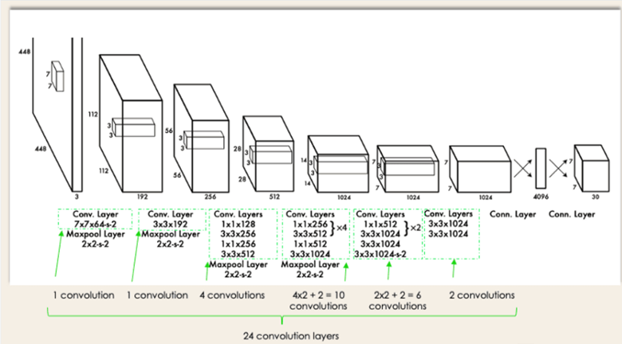
Figure 2: Visual representation of YOLO model architecture.
Here, we focus on the YOLOv5n and YOLOv8n variants due to limited computation resources.
DETR
addition to YOLO architectures, we also explored the use of DETR (Detection Transformer), a novel architecture that approaches object detection with a set-based global loss and uses transformers. DETR was proposed by the Facebook AI Research team in 2020 and eliminates the need for many hand-designed components like anchor generation and non-maximum suppression that YOLO relies on. This method has not been used for this specific dataset, to the best of our knowledge, and based on our results it can become one of the best approaches. It consists of 3 main components:
CNN Backbone: DETR utilizes the pretrained ResNet50 for feature extraction.
Encoder - Decoder: These layers produce the final set of predicted class labels and bounding boxes through multiple multi-head self-attention and decoder-encoder attention.
Feed Forward network: for the final detection prediction.
The exploration of DETR is aimed at understanding its potential for providing more scalable and efficient solutions in environments that require handling a large variety of object sizes and complex scenes.
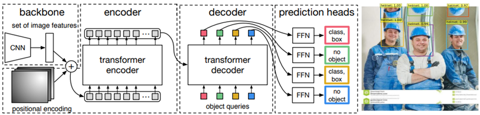
Figure 3: Visual representation of DETR model architecture.
The model is trained on the COCO dataset which contains 80 classes, not including ours. Therefore, the need to fine-tune the model to our dataset arose.
Evaluation Metrics
We evaluate the performance of the models using metrics such as precision, recall, and mean average precision (mAP), each serving a distinct role in assessing the effectiveness of the helmet detection models. More specifically,
Precision: measures the proportion of true positive helmet predictions among all positive predictions, ensuring the model minimizes false alarms that could cause unnecessary interruptions on construction sites.
Recall: evaluates the model's ability to detect all actual helmets present, even in challenging conditions, which is vital for not missing any helmets that could compromise worker safety.
Mean Average Precision (mAP): provides a comprehensive measure of the model's quality by averaging precision values at different recall levels, enabling evaluation of its effectiveness in accurately identifying helmets under diverse and challenging real-world conditions.
Results
The main results from our early experiments using YOLOv5 and YOLOv8 include the confusion matrices, the PR curves, the precision/recall/mAP, and the predictions for the test dataset.
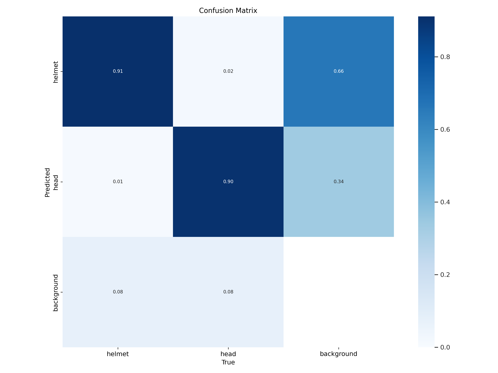
Figure 4: Confusion matrix for the test dataset using YOLOv5 (true vs. predicted labels)
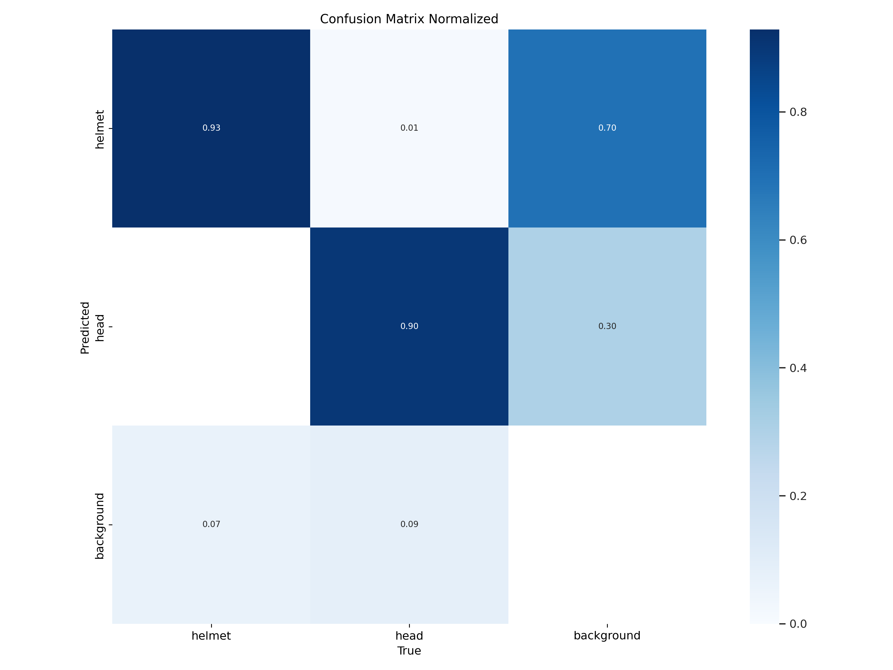
Figure 5: Confusion matrix for the test dataset using YOLOv8 (true vs. predicted labels)
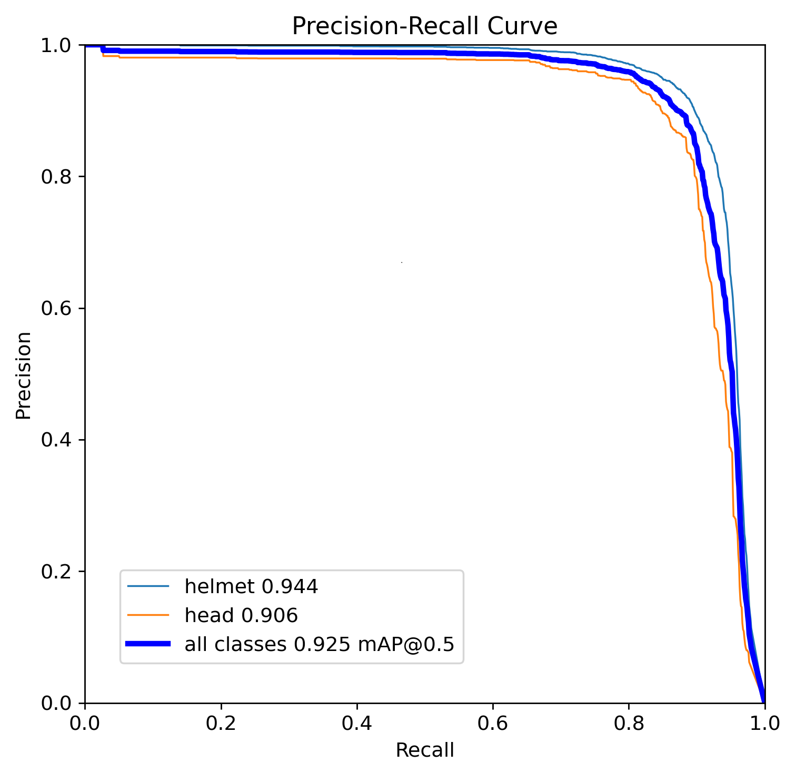
Figure 6: Precision-Recall curve (PR Curve) for the test dataset using YOLOv5
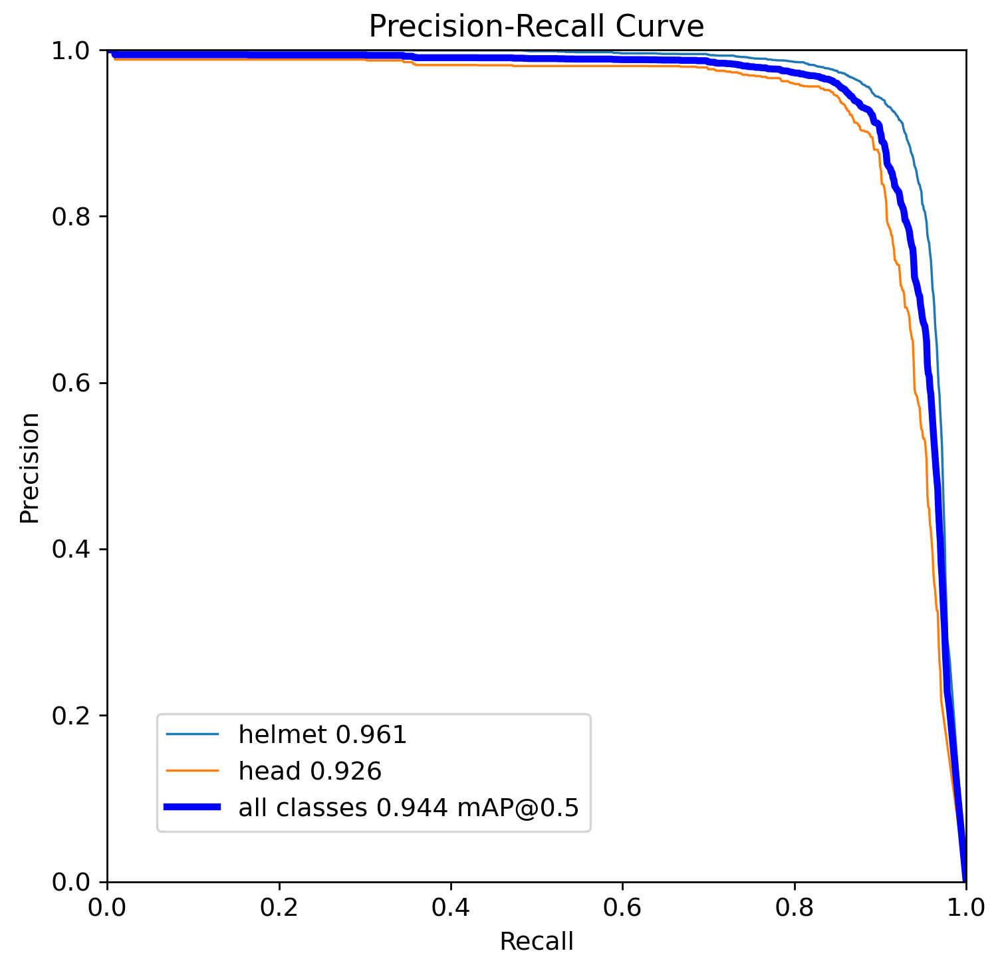
Figure 7: Precision-Recall curve (PR Curve) for the test dataset using YOLOv8
Table 1: Model Evaluation Metrics
Model
Class
Images
Instances
Precision
Recall
mAP
YOLOv5x
all
1000
-
0.910
0.890
-
YOLOv5n
all
1000
4888
0.903
0.869
0.925
helmet
1000
3759
0.934
0.872
0.944
head
1000
1129
0.872
0.865
0.906
YOLOv8n
all
1000
4888
0.918
0.895
0.944
helmet
1000
3759
0.934
0.907
0.961
head
1000
1129
0.901
0.882
0.926
DETR
all
1000
4888
0.927
0.903
0.952
helmet
1000
3759
0.941
0.912
0.971
head
1000
1129
0.918
0.899
0.943
Table 2: Training Configuration
Model
# of Parameters (M)
Optimizer
# of Epochs
Learning rate
Batch Size
YOLOv5n
1.9
SGD
50
0.01
32
YOLOv8n
3.2
Adam
50
0.001
32
DETR
41.3
AdamW
30
0.01
4
YOLOv5x
86.7
SGD
50
0.001
32
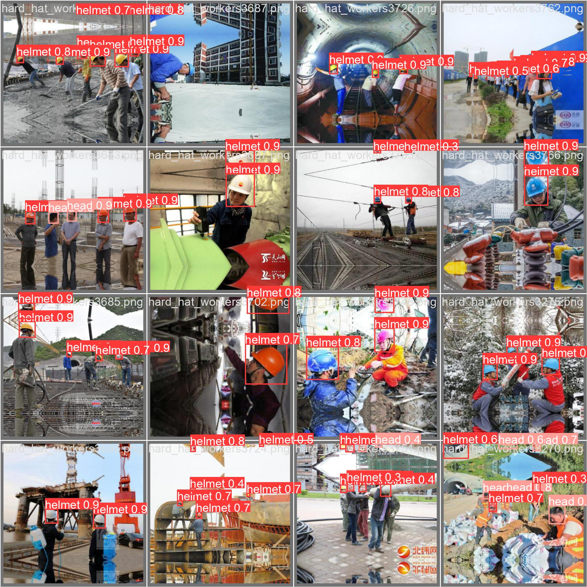
Figure 8: Predictions for test batch of 16 images using YOLOv5
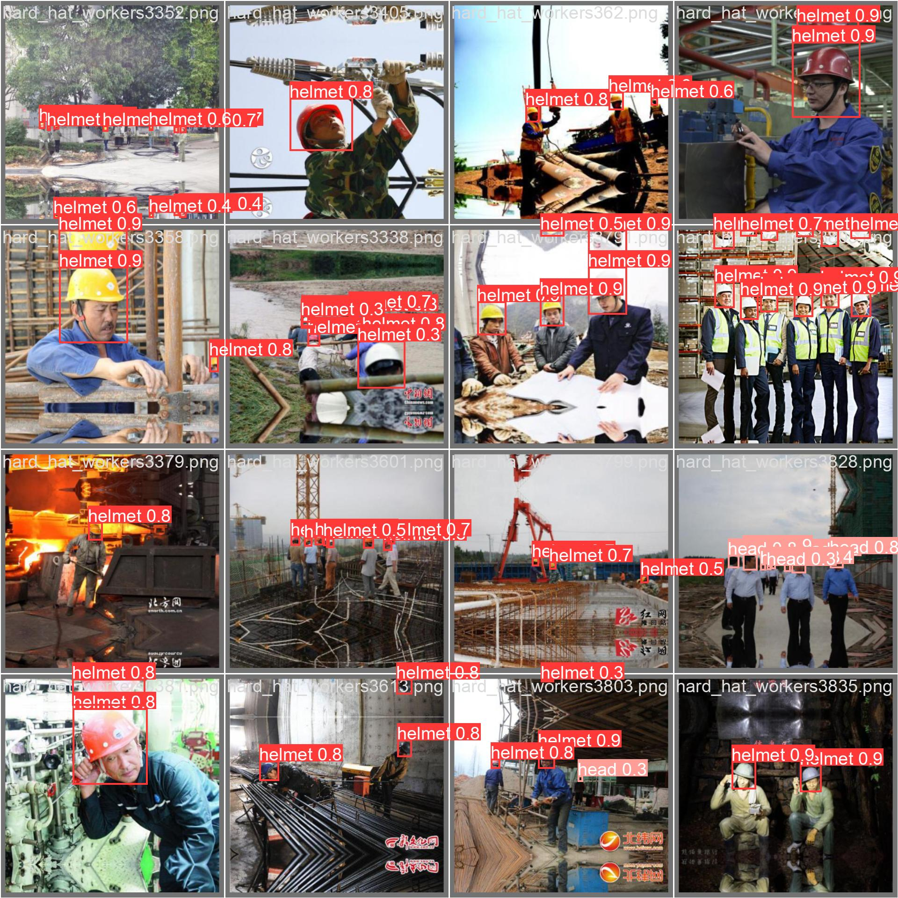
Figure 9: Predictions for test batch of 16 images using YOLOv8
Comparative Predictions
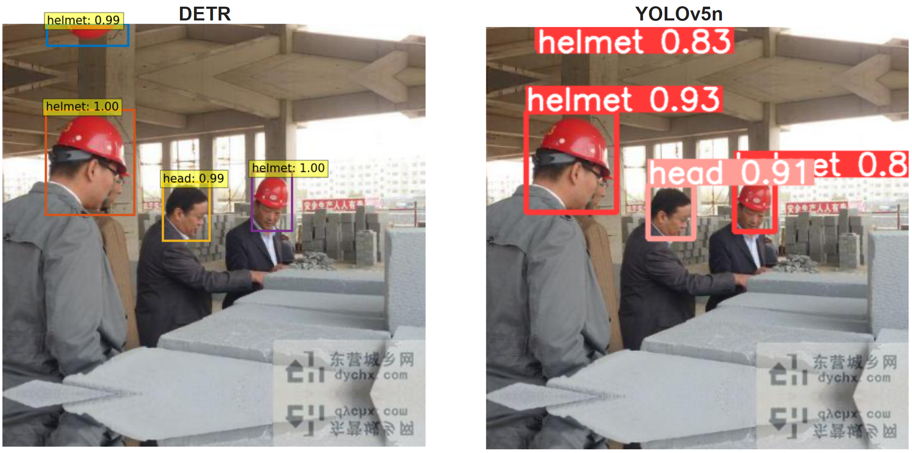
Figure 10: Comparative Predictions from Transformer (on the left) and YOLOv5n (on the right) in a very clear image. Both models accurately detect both classes, with the transformer model exhibiting notably higher confidence levels compared to the YOLO model.
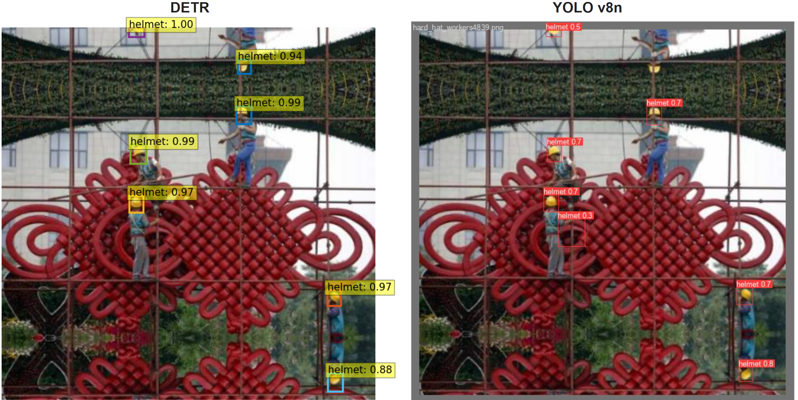
Figure 11: Testing Distant Instances with Transformer (on the left) and YOLOv8n (on the right). In this image, all instances are far from the camera, which is really challenging for the models. Here, not only do we observe a difference in the models' confidence levels, but there is also a noticeable discrepancy in accuracy. The YOLO approach misclassifies a red region in the center as a helmet and fails to detect an actual helmet in the upper part of the image.
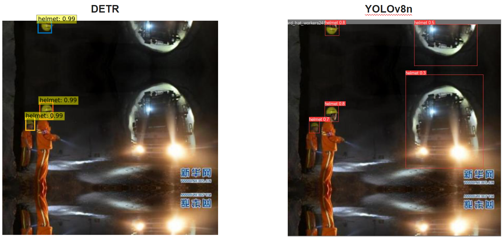
Figure 12: Performance Comparison in Low-Light Conditions. This image, challenging due to its darkness, showcases predictions from the Transformer (on the right) and the YOLOv8n (on the left). The transformer model displays high confidence and accurately classifies all objects without any misclassifications. In contrast, the YOLO model, while still effective, shows lower confidence and incorrectly classifies a truck, illustrating distinct performance differences under low-light conditions.
Discussion
Our experimental analysis involved three advanced deep learning models—YOLOv5, YOLOv8, and DETR—each tested under various conditions and configurations to evaluate their effectiveness in helmet detection on construction sites. The performance metrics precision, recall, and mean average precision (mAP) provided comprehensive insights into each model's capability.
YOLOv5n and YOLOv8n demonstrated robust performance across all categories, with YOLOv8n showing a slight edge in precision and recall, especially in the 'helmet' and 'head' classes. This is indicative of YOLOv8n's improved architecture, which utilizes an anchor-free split Ultralytics head, enhancing detection accuracy and processing efficiency. Specifically, YOLOv8n reached a precision of 0.934 and a recall of 0.907 for helmets, reflecting its strong suitability for real-time safety applications where detecting safety gear accurately is critical.
DETR, employing a transformer-based approach, outperformed both YOLO models in terms of precision and recall in low-light conditions and complex scenarios, as highlighted by the dark image test. DETR’s highest scores were in the 'helmet' category with a precision of 0.941 and a recall of 0.912. Its architecture allows it to manage challenging detection tasks better, thanks to its global view of the image and the elimination of many hand-designed components of conventional detectors.
Nicolas Carion et al. “End-to-end object detection with transformers”. In: European conference on computer vision. Springer. 2020, pp. 213–229.
Alexey Dosovitskiy et al. “An image is worth 16x16 words: Transformers for image recognition at scale”. In: arXiv preprint arXiv:2010.11929 (2020).
Pathasu Doungmala and Katanyoo Klubsuwan. “Helmet Wearing Detection in Thailand Using Haar Like Feature and Circle Hough Transform on Image Processing”. In: 2016 IEEE International Conference on Computer and Information Technology (CIT). 2016, pp. 611–614. DOI: 10.1109/CIT.2016.87.
Sung Hun Kim et al. “Safety helmet wearing management system for construction workers using three-axis accelerometer sensor”. In: Applied Sciences 8.12 (2018), p. 2400.
Tsung-Yi Lin et al. “Microsoft coco: Common objects in context”. In: Computer Vision–ECCV 2014: 13th European Conference, Zurich, Switzerland, September 6-12, 2014, Proceedings, Part V 13. Springer. 2014, pp. 740–755.
Abu H. M. Rubaiyat et al. “Automatic Detection of Helmet Uses for Construction Safety”. In: 2016 IEEE/WIC/ACM International Conference on Web Intelligence Workshops (WIW). 2016, pp. 135–142. DOI: 10.1109/WIW.2016.045.
Zijian Wang et al. “Fast personal protective equipment detection for real construction sites using deep learning approaches”. In: Sensors 21.10 (2021), p. 3478.